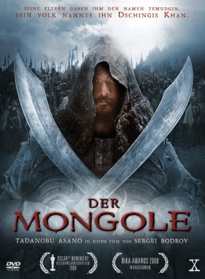

#6102 Der Mongole
Alternativ: Mongol: The Rise of Genghis Khan (Englischer Titel)
Auszeichnungen: für 1 Oscars nominiert
 
 IMDB-Wertung: 7.3 / 10
IMDB-Wertung: 7.3 / 10  Metascore: 0
Metascore: 0 
Biopic über Dschingis Khan und russisches Abenteuerepos, der den Aufstieg eines jungen Mannes zu einem der größten asiatischen Herrscher aller Zeiten erzählt. Der Film beginnt im neunten Lebensjahr des Dschingis Khan und endet mit der Vereinigung aller Mongolen durch den Gründer ihrer Nation.
Jahr: 2007
Dauer: 124 Minuten
FSK: 12
Land: Russland Studio: X Verleih AGTonspuren:
Untertitel: Deutsch,
Auflösung: 1080p (1920x816) Größe: 10342 MB
Genre: Drama, Abenteuer, Krieg, Geschichte, Biographie
Regisseur: Sergei Bodrov
Drehbuch: Jordi Gasull
Soundtrack:
Darsteller:
 Tadanobu Asano als Temudjin
Tadanobu Asano als Temudjin Honglei Sun als Jamukha
Honglei Sun als Jamukha- Khulan Chuluun als Börte
- Aliya als Oelun - Temudjin's Mother
- Baasanjav Mijid als Esugei - Temudjin's Father
- Amadu Mamadakov als Targutai
- He Qi als Dai-Sechen
- Ben Hon Sun als Monk
- Ji Ri Mu Tu als Boorchu
- You Er als Sorgan-Shira
- Huntun Batu als Altan
- Deng Ba Te Er als Daritai
- Bao Di als Todoen
- Su Ya La Su Rong als Girkhai
- Sai Xing Ga als Chiledu
- Tegen Ao als Charkhu
- Zhang Jiong als Tangut Garrison Chief
- Odnyam Odsuren als Young Temudjin
- Bayertsetseg Erdenebat als Young Börte
- Amarbold Tuvshinbayar als Young Jamukha
- Ba Ti als Juchi
- Li Jia Qi als Mungun
- Bu Ren als Taichar
- Te Ba als Khasar
- Bayaneruul als Slave Trader
- Ba Yin Qi Qi Ge als Temulun
- Ba De Rong Gui als Young Taichar
Datei: X:\2007(G-M)\Mongole, Der (2007, FSK12, 1920x816).mkv seit 01.05.2017
Festplatte: HD 2007(A-Z)-2008(A-F)
 Es gibt insgesamt 64 Filme in der Gruppe '2007(G-M)'
Es gibt insgesamt 64 Filme in der Gruppe '2007(G-M)'